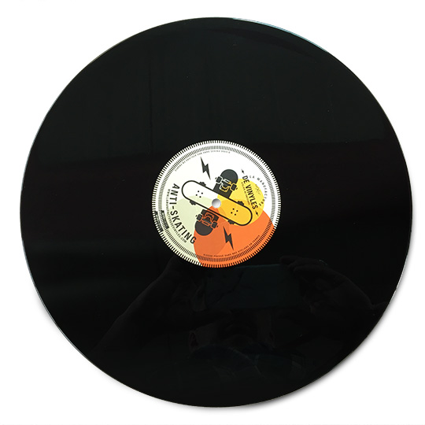

<div class="conteneur">
  <mat-card>
    <mat-card-title style="font-size: larger;">{{nameFile}}</mat-card-title>
    
    
    <mat-card-actions>
      <button mat-button ngbTooltip="Upload your track !" type="button" (click)="forTrack(1)">
        <mat-icon>album</mat-icon>
      </button>
      <input id="fileToUpload" #track1 style="display:none;" type="file" (change)="onSelectFile($event)" >
    </mat-card-actions>
    <mat-card-footer>
      <div [hidden]="!isTrack1">
        <mat-basic-audio-player #playback1 [audioUrl]="msbapAudioUrl"
                                [displayTitle]="msbapDisplayTitle" [displayVolumeControls]="false"></mat-basic-audio-player>
        <button  mat-button (click)="mute(1)">
          <mat-icon *ngIf="playback1.player.nativeElement.volume === 0">volume_off</mat-icon>
          <mat-icon *ngIf="playback1.player.nativeElement.volume !== 0">volume_up</mat-icon>
        </button>
        <mat-slider [(ngModel)] = "volume1" (valueChange)="setVolume(1)"></mat-slider>{{volume1}}%
      </div>
    </mat-card-footer>
  </mat-card>
  <div class="element">
    <button [ngStyle]="{'margin': isPlaying() ? '5px' : '0px', 'cursor': checkIfTwoDisks() ? 'pointer' : 'not-allowed' }"
            mat-raised-button ngbTooltip="Play Both Tracks" [disabled]="!checkIfTwoDisks()" type="button"
            (click)="playBoth()"><mat-icon>play_circle_outline</mat-icon></button>
    <button [ngStyle]="{'margin': isPaused() ? '5px' : '0px', 'cursor': checkIfTwoDisks() ? 'pointer' : 'not-allowed' }"
            mat-raised-button ngbTooltip="Pause Both Tracks" [disabled]="!checkIfTwoDisks()" type="button"
            (click)="pauseBoth()"><mat-icon>pause_circle_outline</mat-icon></button>
    <button [ngStyle]="{'margin': isLoop() ? '5px' : '0px', 'cursor': checkIfTwoDisks() ? 'pointer' : 'not-allowed' }"
            mat-raised-button ngbTooltip="Loop"  type="button" [disabled]="!checkIfTwoDisks()"
            (click)="makeLoop()"><mat-icon>loop</mat-icon></button>
    <button mat-raised-button ngbTooltip="Stop"  type="button" [ngStyle]="{'cursor': checkIfTwoDisks() ? 'pointer' : 'not-allowed' }"
            [disabled]="!checkIfTwoDisks()" (click)="stopPlaying()"><mat-icon>stop</mat-icon></button>
    <button mat-raised-button ngbTooltip="Rewind"  type="button" [ngStyle]="{'cursor': checkIfTwoDisks() ? 'pointer' : 'not-allowed' }"
            [disabled]="!checkIfTwoDisks()" (click)="fast_rewind()"><mat-icon>fast_rewind</mat-icon></button>
    <button mat-raised-button ngbTooltip="Forward"  type="button" [ngStyle]="{'cursor': checkIfTwoDisks() ? 'pointer' : 'not-allowed' }"
            [disabled]="!checkIfTwoDisks()" (click)="fast_forward()"><mat-icon>fast_forward</mat-icon></button>
    <input mat-raised-button type="text" value="r_f_value" [(ngModel)]="rfvalue" (ngModelChange)="checkValue()" style="width: 75px;">
    <label mat-label  class="mat-error error" >{{error || digitsError}}</label>
  </div>
  <mat-card>
    <mat-card-title style="font-size: larger;">{{nameFile2}}</mat-card-title>
    
    
    <mat-card-actions>
      <button mat-button type="button" ngbTooltip="Upload your track !" (click)="forTrack(2)">
        <mat-icon>album</mat-icon>
      </button>

      <input id="fileToUploadTwo" #track2 style="display:none;" type="file" (change)="onSelectFile2($event)" >
    </mat-card-actions>
    <mat-card-footer>
      <div [hidden]="!isTrack2">
        <mat-basic-audio-player #playback2 [audioUrl]="msbapAudioUrl2"
                                [displayTitle]="msbapDisplayTitle2" [displayVolumeControls]="false">
        </mat-basic-audio-player>
        <button  mat-button (click)="mute(2)"><mat-icon *ngIf="playback2.player.nativeElement.volume === 0">volume_off</mat-icon><mat-icon *ngIf="playback2.player.nativeElement.volume !== 0">volume_up</mat-icon></button><mat-slider [(ngModel)] = "volume2" (valueChange)="setVolume(2)"></mat-slider>{{volume2}}%
      </div>
    </mat-card-footer>
  </mat-card>
</div>
